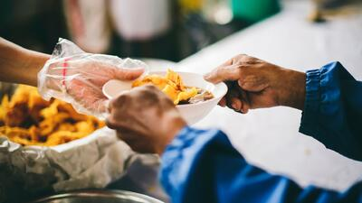
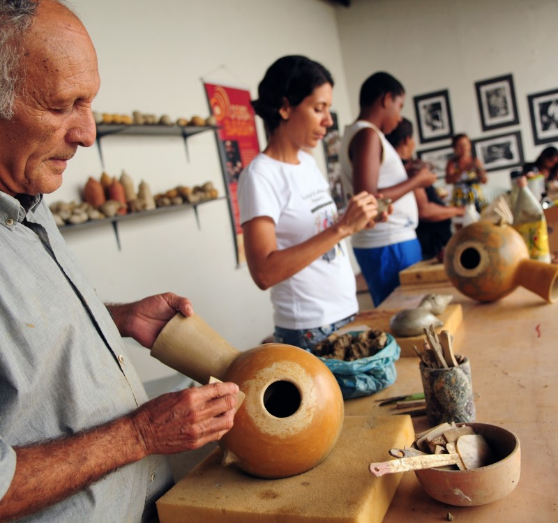
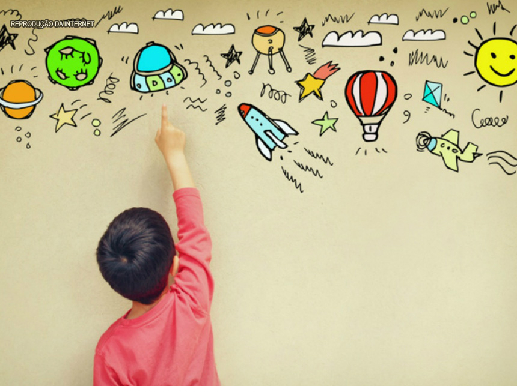

Todos os dias distribuindo almoços grátis para as famílias das periferias dos centros urbanos do país. Queremos que todas as famílias das periferias tenham o direito à alimentação saudável e nutricional.
Oferecer cursos profissionalizantes para dar acesso ao mercado de trabalho e, assim, aumentar a renda familiar. Fomentar a economia da comunidade ao valorizar o empreendedor local.
O objetivo do projeto é combater a evasão escolar, descrever os problemas que impedem o avanço dos alunos em seus estudos, analisar as causas da distorção idade/ano nas escolas locais, com foco contínuo no planejamento de intervenção com ações que garantam a correção desse fluxo.
Somos uma ONG com foco na Redução das Desigualdades baseado no décimo Objetivo de Desenvolvimento Sustentável (ODS) da ONU.
Temos total convicção que é possível empoderar e promover a inclusão social, econômica e política de todos, de forma a reduzir as desigualdades, independentemente da idade, gênero, deficiência, raça, etnia, nacionalidade, religião, condição econômica ou outra.